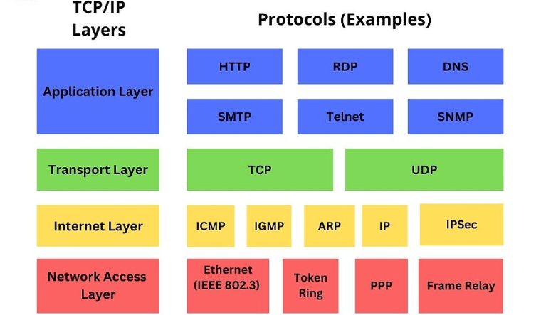

Learning Objectives
- Explain the purpose and structure of the TCP/IP model and how its layers interact to enable data transmission.
- Differentiate the four layers of the TCP/IP model and identify key protocols and responsibilities at each layer.
- Describe IP addressing fundamentals and how IP addresses identify networks and hosts.
- Explain subnetting concepts, including subnet masks, CIDR notation, and the reasons for subnetting.
- Perform basic subnet calculations to determine network, broadcast, and usable host ranges.
- Understand the benefits of subnetting for security, performance, and address management.
Exploring TCP/IP
The TCP/IP model (Transmission Control Protocol/Internet Protocol) is the de facto architecture for networking and internet communications. It organizes the network stack into four functional layers. Unlike the OSI model's seven layers, TCP/IP groups related responsibilities so that practical protocol suites like TCP and UDP can operate efficiently across the internet.
TCP/IP Layers (bottom → top)
- Network Access (Link) Layer
Handles the physical transmission of data across a medium (copper, fiber, wireless). Responsible for hardware addressing (MAC addresses), framing, and interacting with the NIC and drivers. This layer maps to OSI Physical + Data Link in practice. - Internet Layer
Manages logical addressing and routing between networks. The Internet Protocol (IPv4/IPv6) operates here and is responsible for packet addressing, fragmentation, and hop-by-hop routing decisions. - Transport Layer
Provides end-to-end communication and process-to-process delivery. Two main protocols are used:- TCP (Transmission Control Protocol): connection-oriented, reliable, ensures ordered delivery and retransmission of lost segments.
- UDP (User Datagram Protocol): connectionless, low-overhead, suitable for real-time applications where speed is preferred over guaranteed delivery.
- Application Layer
The top layer where user-facing services and applications operate (HTTP, DNS, SMTP, FTP, etc.). It represents the protocols that end-users and applications interact with directly.
Tip: When troubleshooting, map observed behavior to the TCP/IP layer that most directly handles the failing functionality — e.g., a routing problem is likely at the Internet layer, while an application timeout may be Transport or Application layer related.
Subnetting
Subnetting is the process of dividing a larger IP network into smaller logical networks (subnets). Each subnet has its own network address and range of host addresses. Subnetting helps conserve IP address space, reduce broadcast domains, improve performance, and create logical security boundaries.
Key Concepts
- IP Addressing: An IP address identifies a device on a network. IPv4 addresses are commonly expressed in dotted-decimal (e.g., 192.168.10.0) and are composed of network and host portions determined by the subnet mask.
- Subnet Masks: A subnet mask (e.g., 255.255.255.0) separates the network ID from the host ID. In binary, consecutive ones indicate network bits; zeros indicate host bits.
- CIDR Notation: Classless Inter-Domain Routing notation (e.g., 192.168.10.0/24) denotes the address and the prefix length (number of network bits). CIDR enables flexible allocation of address blocks.
- Subnetting Types: Classful (historical), Classless (CIDR), Fixed Length Subnet Masking (FLSM), and Variable Length Subnet Masking (VLSM). VLSM allows different subnet sizes within the same network block and is widely used for efficient addressing.
Why Subnet?
- Limits broadcast domains to smaller groups, improving network efficiency.
- Allows logical separation of departments or services for security policies (e.g., VLANs).
- Provides better route summarization and scalable IP management.
Basic Subnet Calculation (conceptual walkthrough)
To calculate subnets you need three items: the base network address, the subnet mask (or prefix), and the desired number of subnets or hosts per subnet.
Example (conceptual): Given a /24 network (e.g., 192.168.1.0/24) you can create subnets by borrowing host bits:
- /25 (255.255.255.128) → two subnets: 192.168.1.0/25 and 192.168.1.128/25. Each subnet supports 126 usable hosts.
- /26 (255.255.255.192) → four subnets: 192.168.1.0/26, .64/26, .128/26, .192/26. Each supports 62 usable hosts.
Network address = the first address in the subnet (all host bits = 0). Broadcast address = the last address in the subnet (all host bits = 1). Usable host range = addresses between network and broadcast.
CIDR & Route Summarization
CIDR allows aggregation of contiguous subnets into a single route entry, reducing the size of routing tables. For example, four /26 subnets can be summarized as a single /24 in some scenarios (when contiguous and aligned).
Practical Subnetting Tips
- Plan subnets around function and growth: leave space for expansion.
- Use VLSM where address efficiency matters (different subnets for different host counts).
- Document subnets clearly: network address, mask/prefix, broadcast, and usable ranges.
- Test with a subnet calculator while learning, then practice binary-bit math to deepen understanding.
Troubleshooting & Practical Examples
When diagnosing IP addressing and connectivity issues, use a methodical approach:
- Verify physical/link connectivity (cables, switches, wireless association).
- Confirm IP configuration (address, mask, gateway) with
ipconfigorifconfig. - Use
pingto check reachability: local interface, default gateway, remote host. - Trace route (traceroute/tracert) to see hop-by-hop routing and locate failures.
- Check ARP tables and MAC addresses for linking IP → MAC mappings on local networks.
- Review routing tables on routers for proper network advertisement and summarization.
Mapping symptoms to the TCP/IP layer helps isolate problems quickly: link issues at Network Access, routing at Internet layer, session/port problems at Transport, and application faults at Application layer.
Summary
- The TCP/IP model provides a practical, four-layer framework used across the internet.
- Subnetting logically divides networks, improving performance, security, and IP utilization.
- CIDR and VLSM enable flexible address allocation and efficient routing.
- Basic subnet calculations and systematic troubleshooting are essential skills for network technicians.